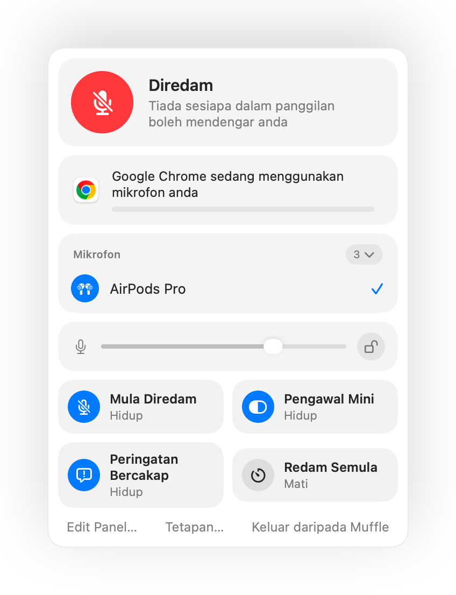

Cara meredam mikrofon pada Mac dengan pintasan papan kekunci
macOS mempunyai kekunci untuk imlak tetapi tiada untuk meredam mik anda. Setiap aplikasi panggilan mempunyai pintasan tersendiri, dan setiap satunya hanya berfungsi apabila aplikasi itu berada di hadapan.
Muffle menambah satu pintasan yang meredam mikrofon itu sendiri, dalam semua aplikasi sekali gus. Lalai ialah Kawalan-Pilihan-M, dan anda boleh memilih sebarang kombinasi.
Cuba Muffle percuma selama 3 hariAkan datang ke Mac App Store
Redam dengan satu pintasan
- Pasang Muffle.
- Tekan Kawalan-Pilihan-M untuk meredam. Ikon bar menu bertukar menjadi merah dan pengesahan kecil “Diredam” dipaparkan.
- Tekan sekali lagi untuk nyahredam.
- Untuk menukarnya, buka Tetapan Muffle, klik pintasan dan tekan pintasan baharu.

- Tahan pintasan semasa diredam untuk bercakap, dan lepaskan untuk meredam semula.
- Klik kanan ikon bar menu Muffle untuk terus meredam dengan tetikus.
Soalan lazim
Adakah pintasan ini berfungsi apabila aplikasi panggilan tidak berada di hadapan?
Ya. Ia berfungsi dari mana-mana aplikasi, termasuk aplikasi skrin penuh.
Bolehkah saya menggunakan satu kekunci sahaja, seperti F5?
Ya. Kekunci fungsi berfungsi dengan sendirinya; kekunci lain memerlukan Kawalan, Pilihan atau Perintah.